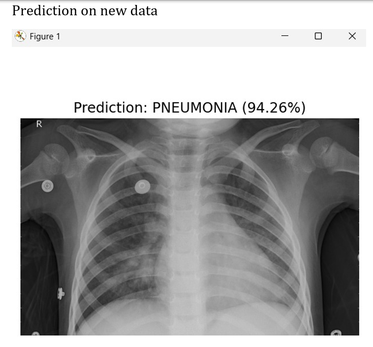

1. Intelligent Dwelling Integration
Home automation project using IoT, integrating smart devices for convenience and efficiency.
B.Tech Artificial Intelligence and Data Science
Home automation project using IoT, integrating smart devices for convenience and efficiency.
An AI-powered healthcare assistant capable of analyzing user symptoms through both speech and image inputs. The system can identify possible conditions, provide suggestions, and guide users for further treatment. It integrates speech-to-text, image analysis, and AI-based response generation to deliver a virtual medical consultation experience.
Deep learning-based CNN model to detect pneumonia in children from chest X-ray images with high accuracy.
